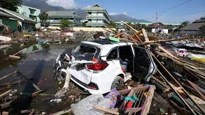

Pada 28 September 2018, pukul 18.02 WITA, gempa bermagnitudo 7,4 yang kemudian disusul dengan gelombang tsunami 5 meter menerjang Palu dan Donggala, Sulawesi Tengah. Pusat gempa dilaporkan berada 26 km utara Donggala dan 80 km barat laut Kota Palu.
Berdasarkan data BNPB bahwa korban meninggal pada peristiwa itu mencapai 2.045 orang, didapati paling banyak ada di Palu sebesar 1.636 orang dan disusul Sigi kemudian Parigi. Sementara itu, korban yang mengungsi sebanyak 82.775 orang, dan 8.731 orang pengungsi berada di luar Sulawesi.
Pusat Data dan Informasi Kegempaan Sulawesi Tengah mencatat kerugian akibat gempa dan tsunami di Palu pada 28 September 2018 lalu mencapai angka Rp18,48 triliun.
Kota Palu menderita kerugian paling besar, yakni mencapai Rp8,3 triliun. Bagian pesisir Kota Palu hampir semuanya hancur, begitu juga daerah-daerah yang terjadi likuefaksi, seperti Petobo, Balaroa, dan Sibalya.